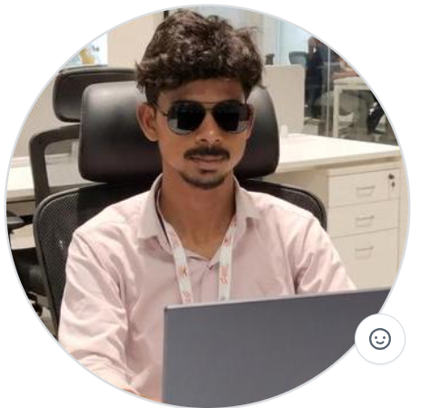

01⌘
Programming
Writing clean code and strengthening core concepts.
OPEN TO OPPORTUNITIES 2027 GRADUATE
Hey, I’m Malladi Satya Balaji — a Computer Science student focused on AI, Machine Learning, and Data Science. I enjoy learning by building practical solutions to real-world problems.

01 / ABOUT ME
I’m a final-year B.Tech student specializing in Computer Science & Artificial Intelligence, graduating in 2027.
My current focus is strengthening my foundations in Python, data analysis, machine learning, and problem-solving. I’m building projects to turn concepts into working applications, documenting what I learn, and looking for opportunities to contribute to a team working with data and AI.
02 / TOOLKIT
A working toolkit, continuously improving through study and projects.
Writing clean code and strengthening core concepts.
Exploring, cleaning, analyzing, and visualizing data.
Learning model workflows and practical ML techniques.
Building, versioning, and sharing technical work.
↳ Only list technologies you can discuss confidently in an interview. Update these as your experience grows.
03 / SELECTED WORK
Active and ongoing projects focused on practical AI, ML, and impactful applications.
An intelligent vision-language assistant designed for remote-sensing analysis and satellite imagery interpretation to extract actionable geospatial insights.
A safety-focused emergency response application featuring instant SOS alerts, real-time location tracking, and fast crisis notification workflows.
End-to-end exploratory data analysis and predictive modeling pipelines evaluating real-world datasets with feature engineering and performance metrics.
04 / THE FOUNDATION
Building a strong foundation in computer science while exploring applied AI and data-driven problem-solving.
2023 — 2027 · EXPECTED
Bonam Venkata Chalamayya Engineering College (BVCEC), Odalarevu, Andhra Pradesh.
Final-year studentCURRENT FOCUS
Python, data analysis, machine learning, DSA practice, project development, and interview preparation.
Learning in progress05 / LET’S CONNECT
Interested in AI/ML, Data Science, internships, or collaborating on a useful project? I’d be glad to connect.